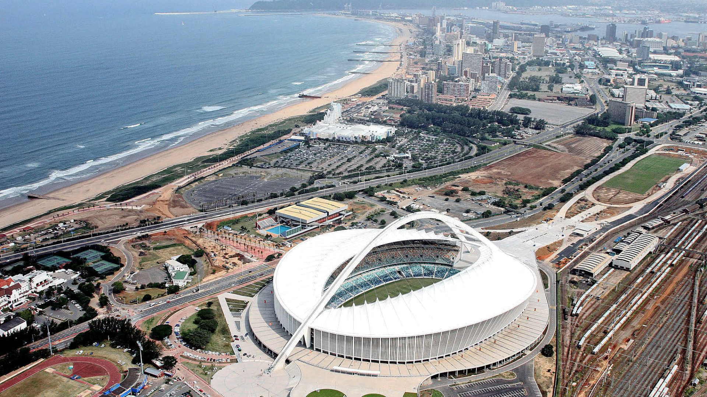

Durban is the third most populous city in South Africa after Johannesburg and Cape Town and the largest city in the South African province of KwaZulu-Natal. Durban forms part of the eThekwini Metropolitan Municipality, which includes neighboring towns and has a population of about 3.44 million, making the combined municipality one of the biggest cities on the Indian Ocean coast of the African continent. Durban is located on the east coast of South Africa, looking out upon the Indian Ocean. The city lies at the mouth of the Umgeni River, which demarcates parts of Durban's north city limit, while other sections of the river flow through the city itself. Durban has a natural harbour, Durban Harbour, which is the busiest port in South Africa and is the 4th-busiest in the Southern Hemisphere.
 HOME